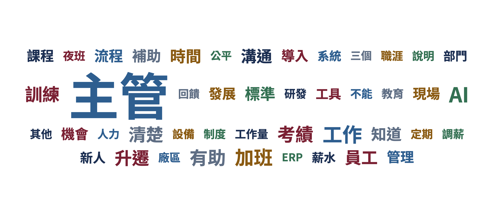
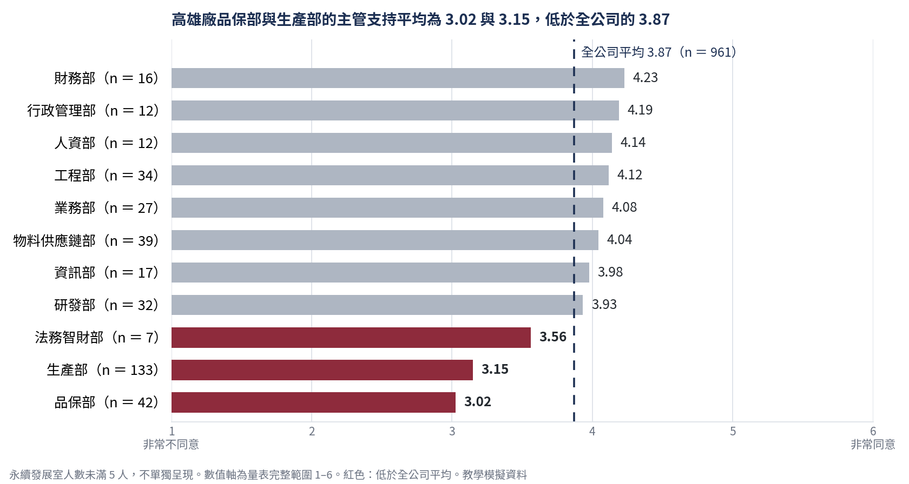
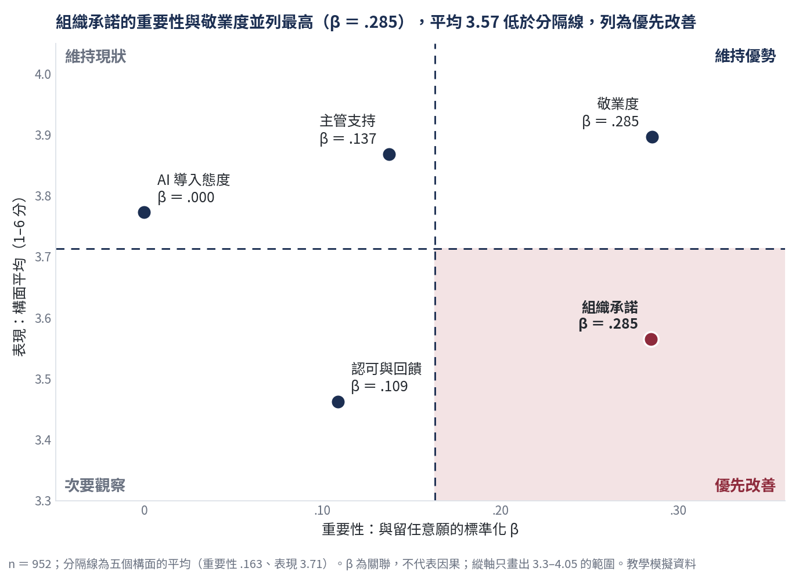

資料視覺化：調查報告的圖表與敘事
Topic 07 至 Topic 09 已經算出清理後人數、群組差異、驅動因子與開放題的主題次數。本主題處理下一步：把這些數字整理成讀者看得懂的圖，並把報告改成先寫結論的順序。內容分成三部分：報告的動線與標題寫法、依題型選擇圖表、避免讀者誤讀的檢核項目。本主題不要求程式能力，圖由網頁版 AI 依提示詞畫出，再由自己對照檢核。
本主題不教新的統計方法。圖上的每一個數字都來自前三個主題的分析；圖的工作是讓讀者更快、更正確地讀到這些數字。
- 課前：讀單元一 結論先行的報告動線與單元二 李克特題的作答分布圖，約 30 分鐘
- 課堂：開課堂投影片，下載練習資料（Topic 07–10 共用），依單元七 實機練習的七輪提示詞操作。練習由一個人完成：請 AI 畫圖，自己對照答案與檢核項目，把標題改寫成發現，最後組成一頁摘要
- 課後：用分析檢核表（一頁）對照每一輪的答案（單元八）；個人分析作業用作業版資料補做未完成的章節並完成第六章結論與管理建議；圖為選用，只用表格也可以
本主題單元
| 單元 | 學習目標 |
|---|---|
| 一、結論先行的報告動線 | 寫出 3 到 5 項重點發現（一句話加一個數字）、樣本輪廓與觀點型標題；對應個人作業第六章 |
| 二、李克特題的作答分布圖 | 以100% 堆疊橫條圖與發散式堆疊橫條圖呈現 6 點量表的作答分布；雙色漸層的配色 |
| 三、單位比較與基準線 | 以橫條圖比較各單位平均，加上全公司平均的基準線；數值軸、排序、n 與小群組 |
| 四、優先改善矩陣的畫法 | 把 Topic 08 的優先改善矩陣畫清楚：直接標示、分隔線、座標軸與註記 |
| 五、開放題與複選題的圖 | 以主題次數橫條圖加原文引述呈現開放題；複選題的百分比與圖 |
| 六、避免誤讀的圖表檢核 | 截斷的數值軸、排序、數值標籤、n、效果量與 p 值、相關與因果的用語 |
| 七、實機練習 | 七輪提示詞與答案對照 |
| 八、檢核表與個人作業 | 一頁檢核表；個人作業各章可用的圖 |
| 九、互動儀表板（進階示範） | 篩選器、連動的圖、篩選後的 n 與基準、可搜尋的原文卡片；選讀 |
| 十、參考文獻與名詞對照 | 本主題引用來源與中英名詞 |
工具與檔案
| 工具 | 用途 |
|---|---|
| Topic 10 課堂投影片 | 課堂講解用投影片；投影片與本網站使用不同的例子 |
| 員工調查模擬資料 | 沿用 Topic 07；本主題從原始資料開始，清理規則與前三個主題相同 |
| Topic 10 分析檢核表（Excel） | 一頁：每一輪要對照的數字、圖上必須看得到的項目；旁邊填自己的結果。只用於課堂練習（單元八） |
| ChatGPT、Claude 或 Gemini | 網頁版，需可上傳檔案並執行程式；圖由 AI 存成 PNG 下載 |
| Excel 或 PowerPoint | AI 無法顯示中文字型時，用 AI 給的表格自己畫圖；也用來微調標題與標籤 |
作答校準面板
高信心但答錯的題目，表示該單元的理解與自我評估有落差；低信心但答對，表示理解比自我評估穩固。
| 作答信心 | 答案與理由皆正確 | 答案對但理由錯 | 答案錯誤 |
|---|---|---|---|
| 高 | 0 | 0 | 0 |
| 中 | 0 | 0 | 0 |
| 低 | 0 | 0 | 0 |
尚未作答任何檢測題。
單元一：結論先行的報告動線
1.1 報告的三段動線
分析者習慣依工作的順序寫報告：資料、清理、方法、結果、結論。讀報告的主管多半只有幾分鐘，依這個順序要讀到最後才知道結論。調查報告常用的順序相反：
| 段落 | 內容 | 回答讀者的問題 |
|---|---|---|
| 一、摘要 | 3 到 5 項重點發現，每項一句話加一個數字；接著是建議行動 | 這次調查最重要的結果是什麼 |
| 二、樣本輪廓 | 原始人數、清理後的有效人數、各群組的人數與百分比 | 這些結果代表誰的意見 |
| 三、主題章節 | 每一節一個主題：一個觀點型標題、一張圖、兩三句說明 | 每一項發現的依據是什麼 |
| 附錄 | 清理規則、完整表格、方法說明 | 數字怎麼算出來的 |
這個順序稱為結論先行。方法與細節沒有省略，只是移到後面，供想查證的讀者閱讀。Topic 11 的 BLUF 與 SCQA 會用同一個原則處理口頭簡報；本主題先處理書面報告。
名詞結論先行：報告先寫結論與重點發現，再寫支持的資料與方法；報告摘要：放在報告最前面的一頁：重點發現、樣本輪廓與建議行動。
1.2 重點發現：一句話加一個數字
摘要的每一項發現只用一句話，句中放一個最能代表這項發現的數字。數字太多時，讀者記不住；沒有數字時，讀者無從判斷大小。以課堂練習資料為例：
重點發現
- 組織承諾與留任意願的關聯和敬業度並列最強（β ＝ .285），平均卻低於分隔線，是唯一落在優先改善的構面（圖 3）。
- 高雄廠生產部與品保部的主管支持平均為 3.12，比其他單位低 0.92 分，屬於大的差距（d ＝ −1.00；圖 2）。
- 六個構面中，認可與回饋的同意比例最低，只有 49.1%（圖 1）。
- 512 則開放題答案中，薪資福利被提到 88 則（17.2%），是最常被提到的改善事項（圖 4）。
樣本輪廓
- 問卷 1,000 份，刪除直線作答 20 人與隨機亂填 19 人後，有效 961 人。
- 台南廠 334 人（34.8%）、台中廠 253 人（26.3%）、高雄廠 374 人（38.9%）。
- 開放題「最希望公司優先改善的事項」有內容的答案 512 則。
限制
- 教學模擬資料；同一個時間點的調查，β 與差距都是關聯，不代表因果。
第 2 項寫了平均、差距與 d 三個數字，超過「一個數字」的原則；群組差異需要同時交代差距與效果量時，可以這樣寫，其餘各項維持一個數字。四項發現分別對應單元七實機練習的四張圖。
名詞重點發現：一句話加一個數字的結論；一份報告 3 到 5 項。
1.3 樣本輪廓
樣本輪廓放在摘要之後、各主題之前。讀者需要先知道有多少人回答、清理後剩多少人、各群組的人數，才能判斷後面的結果代表誰。以清理後的 961 人為例：
| 變項 | 群組 | 人數 | 百分比 |
|---|---|---|---|
| 廠區 | 台南廠 | 334 | 34.8% |
| 台中廠 | 253 | 26.3% | |
| 高雄廠 | 374 | 38.9% | |
| 人員類別 | 直接人員 | 537 | 55.9% |
| 間接人員 | 424 | 44.1% | |
| 職級 | 基層員工 | 743 | 77.3% |
| 基層主管 | 161 | 16.8% | |
| 中階主管 | 57 | 5.9% | |
| 年資 | 未滿1年 | 124 | 12.9% |
| 1-3年 | 194 | 20.2% | |
| 3-5年 | 174 | 18.1% | |
| 5-10年 | 271 | 28.2% | |
| 10年以上 | 198 | 20.6% |
真實的調查還會列出回收率（回收份數除以發放份數），並與全公司的人員結構比較，檢查某個群組是否回答得特別少。模擬資料沒有發放份數，這裡只列有效人數。各題的有效人數因為遺漏值而略有不同，圖上標示的 n 以該題或該構面實際有分數的人數為準。
名詞樣本輪廓：誰回答了問卷：原始人數、有效人數與各群組的人數；有效人數：清理後、該題或該構面有作答的人數；圖表中以 n 表示。
1.4 觀點型標題
標題只寫主題（例如「留任意願」）時，讀者要自己從圖裡找出結論。觀點型標題直接寫出發現，讀者先讀到結論，再用圖確認。
| 只寫主題的標題 | 觀點型標題 |
|---|---|
| 各構面作答分布 | 六個構面中，認可與回饋的同意比例最低，只有 49.1% |
| 各部門留任意願 | 品保部的留任意願平均 3.31，在 12 個部門中最低，全公司為 3.59 |
| Q35 開放題整理 | 512 則答案中，薪資福利被提到 88 則，是最常被提到的改善事項 |
- 一句話，20 到 40 個字，包含最重要的一到兩個數字。
- 寫的是資料顯示的結果，不寫原因的推測；避免「影響」「造成」「導致」（6.4）。
- 標題與圖一致：標題說「最低」，圖上就要能一眼找到最低的那一條（排序、重點色）。
- 把整份報告的標題依序讀一遍，應該就是一份完整的摘要。
名詞觀點型標題：直接寫出發現的標題，例如「認可與回饋的同意比例最低」；相對於只寫主題的標題。
1.5 與個人分析作業的對應
個人分析作業的報告固定為六章，章節順序依作業說明頁與 Word 範本，不需要重排。本單元的做法用在下列位置：
| 本單元 | 個人作業 |
|---|---|
| 重點發現 | 第六章 6.1 主要結論：結論寫在最前面，3 到 5 項，每項對應前面章節的數字 |
| 樣本輪廓 | 第一章：原始人數、各步驟刪除人數、清理後人數 |
| 觀點型標題 | 第三至五章的圖表標題；章節標題維持範本的寫法 |
| 限制 | 第六章 6.4 限制：模擬資料、橫斷面、相關不等於因果 |
圖表不是新增的必交項目。作業說明頁 Week 12 的進度為「補做前面未完成的章節」，報告沒有必交的圖，只用表格也可以，各章可以使用哪些圖見單元八。
人資專員的調查報告共 20 頁，依序為：研究方法、樣本說明、各題平均數的表格、群組比較，最後一頁才是結論。人資長只有十分鐘。下列修改何者最恰當？
單元二：李克特題的作答分布圖
2.1 平均數看不到的資訊
Topic 07 與 Topic 08 用構面平均做比較與迴歸。平均數適合統計檢定，但讀者不容易體會「3.46 分」代表什麼。同一個平均可以來自很不一樣的作答情形：多數人集中在 3 分與 4 分，或是一半的人很同意、一半的人很不同意。作答分布圖直接畫出每個選項有多少比例的人選，讀者可以看到「有多少人同意」。
本單元以認可與回饋（REC）三題與組織承諾（COM）三題為例。六題的平均都在 3.4 到 3.6 之間，同意比例（選 4、5、6 分的人）在 48.6% 到 53.1% 之間。
名詞李克特題：以同意程度作答的題目；本課程為 6 點量表，1＝非常不同意，6＝非常同意；同意比例：選擇 4、5、6 分（有點同意、同意、非常同意）的百分比。
2.2 100% 堆疊橫條圖
每一題一條橫條，六個選項的百分比由左到右依序排列，合計 100%。橫條用橫的，題目文字才放得下。
橫條內的數字為各選項的百分比（四捨五入至整數）；右側為 4–6 分合計的同意比例。清理後 961 人，各題 n 為該題有作答的人數。
這種圖容易比較最左邊（非常不同意）與最右邊（非常同意）兩段，因為它們各自對齊左右邊緣。中間各段的起點每一題都不同，不容易比較；「同意的人是否過半」要看 3 分與 4 分的交界落在 50% 的哪一側。
名詞100% 堆疊橫條圖：每一題一條橫條，各選項的百分比依序排列，合計 100%。
2.3 發散式堆疊橫條圖
把同一批百分比改成以中央線為準：不同意的三個選項畫在中央線左側，同意的三個選項畫在右側。橫條向右伸得越長，同意的人越多；向左伸得越長，不同意的人越多。
中央線左側為 1–3 分，右側為 4–6 分；依同意比例由高到低排序。清理後 961 人。
六題的同意比例都在一半上下，最低的是「公司有讓我了解自己表現好壞的回饋機制」（48.6%），最高的是「公司的價值觀與我的個人價值觀相符」（53.1%）。兩種圖用的是同一批數字；題數多、想比較同意與不同意兩側時用發散式，想強調合計 100% 的組成時用 100% 堆疊。
名詞發散式堆疊橫條圖：以中央線分開不同意與同意兩側的堆疊橫條圖，可直接比較兩側的長度。
2.4 6 點量表的配色與中央線
- 課程問卷是 6 點量表，沒有中間選項：1、2、3 分是不同意的三個程度，4、5、6 分是同意的三個程度。中央線落在 3 分與 4 分之間，左右各三段。
- 配色用雙色漸層：不同意一側用同一個色系，同意一側用另一個色系；越靠近中央越淺，越往兩端越深。讀者不看圖例也能分辨方向與強度。
- 紅色與藍色的組合對多數色覺辨識障礙者仍可分辨；紅配綠容易混淆，不建議使用。
- 5 點或 7 點量表有中間選項（例如「普通」）時，常見的做法是把中間選項用灰色單獨畫在一側，或以中央線平分。這個做法不適用於本課程的 6 點量表；AI 預設的畫法常以 5 點量表為準，提示詞要寫明「6 點、沒有中間點」。
名詞雙色漸層：兩個色系各自由淺到深的配色，用於有兩個方向的資料；中間選項：5 點或 7 點量表中間的選項（例如「普通」）；本課程的 6 點量表沒有中間選項。
2.5 修改前與修改後
同一批數字。問題：六個選項用六種不相關的顏色，看不出哪些是同意；圖例只寫 1 到 6；沒有排序、沒有數值、沒有 n；標題沒有說出發現。
修改項目：雙色漸層、中央線、依同意比例排序、兩側標出百分比、題目下方標出 n、標題改為發現。清理後 961 人；6 點量表，1＝非常不同意，6＝非常同意。
2.6 反向題、排序與題目文字
- 反向題（本資料為 RET03 與 AIA04）先以 7 減原始分數轉換，再計算分布；圖上在題目後面註明「反向題，已轉換」，讀者才知道右側代表正面的方向。
- 排序依同意比例由高到低；題目很多時，可以先依構面分組，組內再排序。
- 題目文字用問卷上的中文原文或簡短的中文名稱，不用 REC01 這類代碼。
- 以構面為單位時，把同一構面各題的作答合併計算（實機練習第 1 輪的做法），圖上註明合併的方式。
- 決定呈現的單位：整個構面（各題作答合併）或單一題目
- 指定圖的形式：發散式堆疊橫條圖，1–3 分在左、4–6 分在右
- 指定配色、排序、數值標籤與 n
- 要求 AI 另外列出畫圖用的百分比表格
請用清理後的資料畫一張「發散式堆疊橫條圖」，呈現六個構面的作答分布： 1. 每個構面把該構面所有題目的作答合併計算（反向題用轉換後的分數；清理後的 961 人中，有作答的題次都計入），算出 1 到 6 分各占多少百分比。 2. 本量表為 6 點、沒有中間點：1–3 分（非常不同意、不同意、有點不同意）畫在中央線左側，4–6 分（有點同意、同意、非常同意）畫在右側，中央線對齊 0。 3. 配色用雙色漸層：不同意一側用同一色系，同意一側用另一色系，越靠近中央越淺、越往兩端越深。不要用彩虹色。 4. 構面依「同意比例」（4–6 分合計）由高到低排序；每條橫條右側標出同意比例，左側標出不同意比例；構面名稱用中文，後面標出該構面分數的有效人數 n。 5. 標題先寫「各構面作答分布」；圖下方註明量尺（6 點，1＝非常不同意，6＝非常同意）與清理後人數。 請把圖存成 PNG 讓我下載，並用表格列出畫圖用的數字（六個構面 × 六個選項的百分比、同意比例、n）。 如果圖中的中文變成方框，請改用英文標籤重畫，並附中英對照表；仍無法解決時只給我表格，我用 Excel 畫。
- 同意比例最高為敬業度（66.1%），最低為認可與回饋（49.1%）
- 每條橫條六個選項的百分比加總為 100%
- 圖上沒有中間的灰色類別；中央線對齊 0
- AI 套用 5 點量表的畫法，多出「普通」
- 反向題沒有轉換就合併，同意比例偏低
- 圖例順序與橫條的順序相反
課程問卷為 6 點量表。請 AI 畫發散式堆疊橫條圖後，圖的中央出現一段灰色，圖例寫「普通」。下列處理何者最恰當？
單元三：單位比較與基準線
3.1 比較的基準
「品保部的留任意願平均 3.31」單獨看沒有意義，讀者需要知道和誰比。調查報告最常用的基準是全公司平均：每個單位一條橫條，全公司平均畫成一條貫穿全圖的基準線。個人作業第三章比較問題單位與其他單位，用的是同一個想法。
其他可用的基準有去年的結果、同產業的常模；本課程的資料只有一個時間點，沒有外部常模，所以用全公司平均。
名詞基準線：圖上標示比較基準的參考線，例如全公司平均。
3.2 修改前：截斷的數值軸
12 個部門的留任意願平均。問題：數值軸從 3.2 開始，財務部（3.99）的長條高度約為品保部（3.31）的 7.2 倍，實際的平均只相差 0.68 分；部門依筆畫排列，看不出高低；沒有 n、沒有基準；部門名稱傾斜不易閱讀。
長條圖用長度表示數值。截斷的數值軸讓長度不再與數值成比例，讀者會高估差距。繪圖工具（包含 AI 使用的套件）預設會自動縮放數值軸，這張圖不需要刻意造假就會出現。
名詞截斷的數值軸：長條圖的數值軸不從 0 或量表最小值開始，會放大長條之間的差距。
3.3 修改後：完整量尺、排序、數值、n 與基準線
數值軸為量表的完整範圍 1–6；紅色為低於全公司平均的部門。部門之間的差異 η² ＝ .034，介於小與中之間。清理後 959 人（留任意願有分數者）。
- 數值軸畫出量表的完整範圍 1 到 6。財務部與品保部的長條長度比為 1.29 倍，與實際的差距相符。
- 改成橫條，部門名稱不必傾斜；依平均由高到低排序，最低的在最下面。
- 每條橫條末端直接標出平均，讀者不必對照座標軸。
- 部門名稱旁標出 n。永續發展室只有 16 人，平均容易受少數人左右；生產部有 317 人。
- 低於基準線的部門用一種顏色，其餘用灰色；顏色只用來標示重點。
- 完整量尺上，各部門的差距看起來不大，這與效果量一致（η² ＝ .034）。圖不應該把小的差距畫成大的差距；差距的大小另外用效果量說明（6.3）。
名詞數值標籤：直接寫在圖形旁邊的數值，讀者不必對照座標軸。
3.4 小群組
本課程沿用 Topic 04 與 Topic 07 的匿名門檻：人數未滿 5 人的群組不單獨呈現。原因有兩個：三四個人的平均很不穩定；人數很少時，主管可能從結果推知個別員工的回答。
- 練習資料清理後，廠區與部門的組合中有 2 個未滿 5 人：台中廠法務智財部（4 人）、高雄廠永續發展室（3 人）。
- 圖上不畫出這些群組的長條，在圖下方註明「○○人數未滿 5 人，不單獨呈現」；它們的資料仍計入全公司平均。
- 人數達到 5 人但仍然很少的群組（例如 7 人），圖上照常呈現並標出 n，解讀時保守。
- 使用篩選器的互動報表，篩選後的人數也適用同一個門檻（單元九）。
名詞小群組：人數未滿 5 人的群組；本課程不單獨呈現其結果。
- 指定範圍（例如某一個廠區的各部門）與構面
- 指定基準線：全公司平均
- 指定數值軸為量表的完整範圍 1 到 6
- 指定未滿 5 人的單位不畫出，並在圖下註明
- 另外請 AI 回報問題單位與其他單位的差距、p 值與效果量
請畫一張橫條圖，比較高雄廠各部門的主管支持（SUP）平均： 1. 只用清理後資料中高雄廠的人；每個部門計算人數與 SUP 平均。 2. 人數未滿 5 人的部門不畫出平均，在圖下方註明「○○部門人數未滿 5 人，不單獨呈現」。 3. 橫條依平均由高到低排序；每條橫條末端標出平均（小數兩位），部門名稱後面標出 n。 4. 加一條垂直的參考線，標示全公司（清理後全部的人）的 SUP 平均，並在線旁寫出數值。 5. 數值軸從 1 畫到 6（量表的完整範圍），不要截斷。低於全公司平均的部門用同一種顏色，其餘用灰色。 另外請比較「高雄廠的生產部與品保部」與「其他單位（清理後其餘的人）」的 SUP 平均：回報兩組的人數、平均、差距、Welch t 檢定的 p 值與 Cohen's d，並用一句話同時寫出差距與效果量。 請把圖存成 PNG，並用表格列出畫圖用的數字。中文無法顯示時，改用英文標籤並附對照表，或只給表格。
- 參考線為 3.87
- 平均最低的兩個部門：品保部 3.02、生產部 3.15
- 永續發展室（3 人）沒有畫出
- 問題單位與其他單位：差距 −0.92，d ＝ −1.00
- 數值軸自動從 2.8 或 3.0 開始
- 參考線用高雄廠的平均，不是全公司平均
- 把 3 人的部門也畫出來
報告中的直條圖比較 12 個部門的留任意願，數值軸從 3.2 畫到 4.0，財務部（3.99）的長條高度約為品保部（3.31）的 7 倍。下列修改何者最恰當？
單元四：優先改善矩陣的畫法
4.1 矩陣的組成
優先改善矩陣的算法已在 Topic 08 單元四說明：橫軸是重要性（多元迴歸的標準化 β），縱軸是表現（構面平均），以兩者的平均畫出分隔線，分成四個象限。本單元只處理畫法：怎麼讓讀者不看說明也讀得懂這張圖。
下圖以敬業度為結果、主管支持、認可與回饋、組織承諾三個構面為預測變項（Topic 08 教材網站的例子，n ＝ 954，R² ＝ .416）。留任意願的矩陣是實機練習第 3 輪的答案。
n ＝ 954；分隔線為三個構面的平均（重要性 .283、表現 3.63）。β 為關聯，不代表因果。縱軸只畫出部分範圍。
4.2 標示的六個項目
| 項目 | 做法 | 原因 |
|---|---|---|
| 點的名稱 | 每個點旁邊直接寫中文構面名稱，不用圖例、不用代碼 | 讀者不必在圖例與圖之間來回對照 |
| 象限名稱 | 四個象限各寫名稱；優先改善的象限加淡色底 | 讀者一眼看到要找的位置 |
| 分隔線 | 虛線，線旁寫出數值；用所有構面的平均 | 分隔線的位置決定象限，讀者要能查證 |
| 座標軸 | 寫出名稱與單位：「重要性：標準化 β」「表現：構面平均（1–6 分）」 | β 與平均是不同的單位，不能省略 |
| 範圍 | 散布圖可以只畫資料所在的範圍，在圖下註明 | 散布圖用位置表示數值，不像長條圖需要從 0 開始；但讀者要知道範圍被放大 |
| 註記 | n、分隔線的定法、「β 為關聯，不代表因果」 | 避免讀者把重要性讀成因果效果 |
- 分隔線依事先定好的規則畫（所有構面的平均），不為了讓某個構面落進優先改善而移動。這張圖沒有構面落在優先改善，就如實呈現。
- 兩個點很接近時（例如認可與回饋、組織承諾的 β 為 .242 與 .245），標籤一個放左邊、一個放右邊，避免重疊；文字說明中不強調兩者的先後。
- 個人作業第四章以象限表為最低要求，矩陣圖為選用。
- 沿用 Topic 08 的模型：留任意願為依變項，五個構面同時放入
- 分隔線用五個構面的平均，不為了結論調整
- 每個點旁邊直接寫中文構面名稱
- 圖下註明 n 與「β 為關聯，不代表因果」
請畫優先改善矩陣（散布圖）： 1. 以留任意願 RET 為依變項，ENG、SUP、REC、COM、AIA 五個構面同時放入多元迴歸（只用六個構面都有分數的人），取得標準化係數 β，並回報模型人數與 R²。 2. 橫軸為重要性（β），縱軸為表現（構面平均，用清理後全部有分數的人）。 3. 以五個構面 β 的平均、五個構面平均的平均各畫一條分隔線，四個象限標示：優先改善（重要性高、表現低）、維持優勢（重要性高、表現高）、次要觀察（重要性低、表現低）、維持現狀（重要性低、表現高）。 4. 每個點旁邊直接寫中文構面名稱，不用圖例；兩軸寫出名稱；圖下方註明 n，以及「β 為關聯，不代表因果」。 請把圖存成 PNG，並用表格列出五個構面的 β、平均與所在象限。中文無法顯示時，改用英文標籤並附對照表，或只給表格。
- 模型人數 952、R² ＝ .389
- 分隔線 .163 與 3.71
- 落在優先改善象限的是組織承諾
- 點旁邊只寫 ENG、COM 等代碼
- 用圖例對照顏色，讀者要來回比對
- 縱軸只畫 3.3 到 4.1，卻沒有註明
單元五：開放題與複選題的圖
5.1 主題次數橫條圖
Topic 09 單元二說明過，文字雲計算的是詞，不是主題，適合探索，不適合決定排序。報告中呈現開放題的結果，用編碼後的主題次數：每個主題一條橫條，依則數排序，標出則數與百分比。
OE1「最希望公司優先改善的事項」，有內容的答案 n ＝ 512 則。一則答案可提到兩個主題（43 則），共 555 次提及，百分比合計 108.4%。
- 百分比的分母是答案則數（512），不是提及次數（555）。讀者要知道的是「多少比例的答案提到這個主題」。
- 圖下註明 n 與「百分比合計超過 100%」，讀者才不會以為算錯。
- 「籠統或無具體內容」「離題」也列出，讀者可以看到有多少答案沒有可用的內容。
- 主題次數回答「員工最常提到什麼」，不等於與留任意願關聯最強的因素（Topic 09 單元九 9.4）。
名詞主題次數：開放題依編碼簿編碼後，各主題被提到的答案則數（Topic 09）。
5.2 修改前：文字雲

Topic 09 的文字雲（同一題 OE1）。問題：最大的詞是「主管」（58 則），讀者會以為主管是最常被提到的事項；薪資福利拆成十個詞，在圖上很小。圖上沒有數值、沒有 n，字的位置與顏色沒有意義。
修改後即 5.1 的橫條圖：依編碼簿編碼後，薪資福利 88 則排第一，主管領導 64 則排第四。文字雲若出現在報告中，註明「探索用」，不作為排序的依據。
5.3 原文引述與去識別化
次數告訴讀者有多少人提到，引述讓讀者知道員工實際怎麼說。每個主要的主題放兩三則原文引述，排在圖的旁邊或下方：
「希望調薪可以跟通膨連動」
「夜班餐點補貼」
「人走了都不補，說要精簡人力」
「排班常常臨時改，沒辦法安排私人的事」
「升遷標準說清楚」
「希望有雙軌制，技術專家也能往上升」
- 挑選：只談一件事、30 字以內、能代表該主題的多數答案；不挑最極端或最有戲劇性的一則。
- 去識別化：刪除或改寫人名、職稱加姓氏、單位名稱、具體日期與事件。「上個月在某一課被課長當眾責罵」這類敘述，結合部門就可能推知是誰，引用時改寫成「主管在眾人面前責罵部屬」並註明「經改寫」。
- 不標示填答者的單位與職級；小單位的答案尤其不標。
- 引述必須是資料中的原文。AI 有時會自行編寫看似合理的「引述」，引用前回到 Excel 搜尋確認。
- 上面六則取自 Topic 09 編碼簿的例句（OE1 的原文，模擬資料）。
名詞原文引述：直接引用填答者的文字；引用前刪除可辨識的內容；去識別化：刪除或遮蔽人名、單位、具體事件等可辨識個人的資訊。
- 把編碼後的主題則數貼給 AI（課堂練習的則數已寫在提示詞中）
- 指定分母為答案則數，並在圖下註明百分比合計超過 100%
- 請 AI 從原始資料挑選原文引述，並自己回到 Excel 核對
開放題 OE1「最希望公司優先改善的事項」已依編碼簿完成主題編碼：有內容的答案 512 則，一則答案可以提到兩個主題。各主題被提到的則數如下： 薪資福利 88、工作負荷與人力 79、升遷與職涯發展 65、主管領導 64、溝通與流程 58、設備系統與工作環境 51、教育訓練 45、考核與認可 44、AI 與數位工具導入 30、籠統或無具體內容 22、離題 9。 1. 畫一張橫條圖：依則數由多到少排序，每條橫條末端標出則數與百分比（分母 512 則）；圖下方註明「n ＝ 512 則；一則答案可提到兩個主題，百分比合計超過 100%」。不要畫圓餅圖，也不要畫文字雲。 2. 用表格回報各主題的百分比，以及百分比的合計。 3. 從原始資料的 OE1 欄，為則數最多的三個主題各挑兩則可以放在圖旁的原文引述：每則 30 字以內、只談一件事；不含人名、職稱加姓氏、單位名稱或可辨識的具體事件；有這類內容時改寫並註明「經改寫」。 請把圖存成 PNG。中文無法顯示時，改用英文標籤並附對照表，或只給表格。
- 薪資福利 88 則（17.2%）
- 百分比合計 108.4%
- 引述的文字在原始資料中找得到
- 以 555 次提及為分母，合計剛好 100%
- AI 自行編寫「引述」，原始資料中沒有這句話
- 引述含單位名稱或可辨識的事件
5.4 複選題
複選題讓一位填答者選多個選項，例如「您希望公司增加哪些訓練主題？（可複選）」。每個選項的百分比以填答人數為分母，各選項合計會超過 100%。這和開放題的多重提及是同一種情形。課程的練習資料沒有複選題，下圖為示意數字，不是課程資料的結果。
示意數字，非課程資料。百分比 ＝ 選擇該選項的人數 ÷ 填答人數；合計 206%。
- 用排序的橫條圖，每條標出百分比；「其他」放在最後，不參與排序。
- 不用圓餅圖：圓餅圖表示各部分加起來是一個整體，複選題的百分比合計超過 100%，畫成圓餅會把每個選項縮小。
- 圖上註明「可複選」與 n（填答人數）。
名詞複選題：一位填答者可以選多個選項的題目；各選項的百分比合計會超過 100%。
OE1 編碼後，512 則答案共有 555 次主題提及（一則答案可以提到兩個主題）。人資專員畫了一個圓餅圖，11 個扇形合計 100%，薪資福利占 15.9%。下列何者正確？
單元六：避免誤讀的圖表檢核
6.1 數值軸
| 圖的種類 | 數值軸 | 原因 |
|---|---|---|
| 長條圖（平均） | 量表的完整範圍，本課程為 1 到 6 | 長條的長度代表數值，截斷會放大差距（3.2） |
| 長條圖（次數、百分比） | 從 0 開始 | 同上 |
| 堆疊橫條圖 | 0 到 100%；發散式以 0 為中央線 | 各段合計為 100% |
| 散布圖、矩陣 | 可以只畫資料所在的範圍，在圖下註明 | 以位置表示數值，不以長度 |
同一份報告中，同一種量尺的圖用相同的數值軸範圍，讀者才能跨圖比較。
6.2 排序、數值標籤與 n
- 排序：類別沒有固定順序時（部門、主題、題目），依數值排序；類別本身有順序時（年資、職級），維持原來的順序。
- 數值標籤：讀者需要的數值直接標在圖上；已經標出數值的圖，格線與刻度可以減到最少。
- n：每張圖都看得到 n。整張圖一個 n 時寫在圖下；各群組人數不同時，寫在群組名稱旁邊。
- 小群組：未滿 5 人不單獨呈現（3.4）。
- 顏色：一張圖最多一個重點色，其餘用灰色；李克特題的雙色漸層除外。顏色只用來表示資料的意義，不用來裝飾。
- 避免立體效果、陰影與雙數值軸（左右兩個不同刻度的軸）；兩種單位的數字分成兩張圖。
6.3 效果量與 p 值並列
p 值回答的是「這個差距是否可能只是抽樣誤差」，不回答「差多少」。樣本大時，很小的差距也會達到 p < .05。下表是練習資料中的兩個比較，兩者都達到顯著：
| 比較（主管支持 SUP） | 兩組平均 | 差距 | p | d | 解讀 |
|---|---|---|---|---|---|
| 直接人員與間接人員 | 3.81、3.95 | −0.14 | .021 | −.15 | 顯著，差距小於「小」的標準 .20 |
| 高雄廠生產部＋品保部與其他單位 | 3.12、4.04 | −0.92 | < .001 | −1.00 | 顯著，大的差距 |
只在圖上標星號時，這兩個比較看起來一樣。報告中的寫法：
- 文字與圖註同時寫出差距與效果量，例如「低 0.92 分，d ＝ −1.00」。兩組比較用 Cohen’s d，三組以上用 η²，相關用 r。
- 星號可以使用，但要在圖註說明代表的 p 值（例如「* p < .05」），並且不取代效果量。
- 效果量的大小以文字說明（小、中、大），並說明實務上的意義：0.14 分的差距是否值得另外處理，由讀者依情境判斷。
- 不顯著的結果也照實寫出差距與效果量，不省略。
名詞效果量：差距或關聯的大小，例如 Cohen’s d、η²、r；不受樣本大小影響；Cohen’s d：兩組平均的差距除以合併標準差；.20、.50、.80 約為小、中、大；η²：群組差異解釋依變項變異的比例；.01、.06、.14 約為小、中、大。
6.4 相關與因果的用語
員工調查多半是同一個時間點的資料。迴歸的 β 與群組的差距都是關聯：組織承諾高的人留任意願也高，資料無法說明是誰造成誰，也可能兩者都受第三個因素左右。標題與說明的用語要和資料能支持的結論一致：
| 避免的寫法 | 建議的寫法 |
|---|---|
| 組織承諾影響留任意願 | 組織承諾與留任意願的關聯最強（β ＝ .285） |
| 主管支持不足導致生產部員工想離職 | 生產部與品保部的主管支持與留任意願都低於其他單位 |
| 提升認可與回饋可以提高留任率 | 認可與回饋的同意比例最低；是否能提高留任，需要後續追蹤或試辦才能確認 |
建議行動可以寫，但要和發現分開：發現寫資料顯示的關聯，建議寫「依這個關聯，值得優先嘗試什麼」，並說明需要後續資料確認。
名詞相關與因果：兩個變項一起變動稱為相關；單次調查的資料不足以推論誰造成誰。
6.5 圖表檢核十項
每張圖完成後逐項勾選；實機練習第 5 輪請 AI 先檢查一次，再自己看圖確認。
已完成 0／10 項。
直接人員與間接人員的主管支持平均為 3.81 與 3.95，p ＝ .021，d ＝ −.15。報告的圖上只在直接人員的長條上標了一顆星號。下列寫法何者最恰當？
單元七：實機練習
- 下載練習資料。練習由一個人完成
- 開啟 ChatGPT、Claude 或 Gemini 網頁版的新對話，上傳練習資料，貼上第 0 輪的提示詞（按「複製」），按「看答案」對照人數
- 第 1 到 4 輪各畫一張圖。每一輪做三件事：下載 AI 畫的 PNG；對照「看答案」的數字與參考圖；把結果填進分析檢核表（一頁）
- 第 5 輪請 AI 依六項檢核檢查四張圖，並把標題改寫成發現；自己再看一次圖，從兩個版本中選定標題
- 第 6 輪請 AI 起草一頁摘要；逐句核對數字，刪掉找不到來源的句子
- Topic 08 的對話還在時，可以在同一個對話接續，從第 1 輪開始；另開新對話時從第 0 輪開始
我上傳員工意見調查的模擬資料（Excel，三個工作表）。這次要把分析結果畫成報告用的圖。請先依下列規則清理，每一步告訴我剩下幾人： 1. 直線作答：29 題全部填同一個數字的人，刪除。 2. 隨機亂填：計算每人敬業度 ENG01–ENG12 的標準差（樣本標準差）；先排除直線作答者，再用其餘的人算出平均與標準差，高於「平均＋3 個標準差」者刪除，並回報門檻值。 3. 反向題：RET03 以 7 減原始分數轉換；AIA04 已確認為題目對照表誤植，也以 7 減原始分數轉換。 4. 構面分數：該構面答了一半以上題目，就取已作答題目的平均；不到一半記為遺漏。不要整列刪除。 清理後請用表格回報： (1) 原始人數、各步驟刪除人數、清理後人數； (2) 樣本輪廓：廠區、人員類別、年資各組的人數與百分比； (3) 六個構面的有效人數與平均。 這一輪先不要畫圖。最後請列出：接下來要畫的四種圖（李克特題作答分布、單位比較、優先改善矩陣、開放題主題次數）各需要哪些數字。
| 項目 | 正確答案 |
|---|---|
| 原始人數、清理後人數 | 1,000 人、961 人（直線作答 20、隨機亂填 19，門檻 1.32） |
| 廠區 | 台南廠 334 人（34.8%）、台中廠 253 人（26.3%）、高雄廠 374 人（38.9%） |
| 人員類別 | 直接人員 537 人（55.9%）、間接人員 424 人（44.1%） |
| 年資 | 未滿1年 124 人（12.9%）、1-3年 194 人（20.2%）、3-5年 174 人（18.1%）、5-10年 271 人（28.2%）、10年以上 198 人（20.6%） |
| 構面平均 | 敬業度 3.90、主管支持 3.87、AI 導入態度 3.77、留任意願 3.59、組織承諾 3.57、認可與回饋 3.46 |
AI 是否遵守「這一輪先不要畫圖」；四種圖需要的數字是否合理：作答分布的百分比、各單位平均與全公司平均、β 與構面平均、主題則數。人數與 Topic 07、08 的清理結果相同。
請用清理後的資料畫一張「發散式堆疊橫條圖」，呈現六個構面的作答分布： 1. 每個構面把該構面所有題目的作答合併計算（反向題用轉換後的分數；清理後的 961 人中，有作答的題次都計入），算出 1 到 6 分各占多少百分比。 2. 本量表為 6 點、沒有中間點：1–3 分（非常不同意、不同意、有點不同意）畫在中央線左側，4–6 分（有點同意、同意、非常同意）畫在右側，中央線對齊 0。 3. 配色用雙色漸層：不同意一側用同一色系，同意一側用另一色系，越靠近中央越淺、越往兩端越深。不要用彩虹色。 4. 構面依「同意比例」（4–6 分合計）由高到低排序；每條橫條右側標出同意比例，左側標出不同意比例；構面名稱用中文，後面標出該構面分數的有效人數 n。 5. 標題先寫「各構面作答分布」；圖下方註明量尺（6 點，1＝非常不同意，6＝非常同意）與清理後人數。 請把圖存成 PNG 讓我下載，並用表格列出畫圖用的數字（六個構面 × 六個選項的百分比、同意比例、n）。 如果圖中的中文變成方框，請改用英文標籤重畫，並附中英對照表；仍無法解決時只給我表格，我用 Excel 畫。
| 構面 | n | 同意比例（4–6 分） | 不同意比例（1–3 分） |
|---|---|---|---|
| 敬業度 | 961 | 66.1% | 33.9% |
| 主管支持 | 961 | 63.3% | 36.7% |
| AI 導入態度 | 961 | 59.4% | 40.6% |
| 留任意願 | 959 | 53.2% | 46.8% |
| 組織承諾 | 957 | 51.6% | 48.4% |
| 認可與回饋 | 958 | 49.1% | 50.9% |
圖上應看得到：中央線、左右兩個色系各三階、依同意比例排序、兩側的百分比與 n。圖上出現「普通」或灰色的中間段時，要求 AI 依第 2 點重畫。
參考圖（課程以 Python 依同一段提示詞畫出；AI 畫的圖樣式不同，數字應相同）

請畫一張橫條圖，比較高雄廠各部門的主管支持（SUP）平均： 1. 只用清理後資料中高雄廠的人；每個部門計算人數與 SUP 平均。 2. 人數未滿 5 人的部門不畫出平均，在圖下方註明「○○部門人數未滿 5 人，不單獨呈現」。 3. 橫條依平均由高到低排序；每條橫條末端標出平均（小數兩位），部門名稱後面標出 n。 4. 加一條垂直的參考線，標示全公司（清理後全部的人）的 SUP 平均，並在線旁寫出數值。 5. 數值軸從 1 畫到 6（量表的完整範圍），不要截斷。低於全公司平均的部門用同一種顏色，其餘用灰色。 另外請比較「高雄廠的生產部與品保部」與「其他單位（清理後其餘的人）」的 SUP 平均：回報兩組的人數、平均、差距、Welch t 檢定的 p 值與 Cohen's d，並用一句話同時寫出差距與效果量。 請把圖存成 PNG，並用表格列出畫圖用的數字。中文無法顯示時，改用英文標籤並附對照表，或只給表格。
| 項目 | 正確答案 |
|---|---|
| 全公司 SUP 平均（參考線） | 3.87（n ＝ 961） |
| 高雄廠人數 | 374 人；畫出 11 個部門 |
| 平均最低的兩個部門 | 品保部 3.02（n ＝ 42）、生產部 3.15（n ＝ 133） |
| 其餘低於全公司平均的部門 | 法務智財部 3.56（n ＝ 7） |
| 未滿 5 人、不呈現 | 永續發展室（3 人） |
| 生產部＋品保部與其他單位 | 175 人、3.12；786 人、4.04；差距 −0.92，p < .001，d ＝ −1.00 |
一句話的寫法例：「高雄廠生產部與品保部的主管支持平均比其他單位低 0.92 分，d ＝ −1.00，屬於大的差距。」法務智財部只有 7 人，平均容易受個別填答者左右，解讀時保守。
參考圖（課程以 Python 依同一段提示詞畫出；AI 畫的圖樣式不同，數字應相同）

請畫優先改善矩陣（散布圖）： 1. 以留任意願 RET 為依變項，ENG、SUP、REC、COM、AIA 五個構面同時放入多元迴歸（只用六個構面都有分數的人），取得標準化係數 β，並回報模型人數與 R²。 2. 橫軸為重要性（β），縱軸為表現（構面平均，用清理後全部有分數的人）。 3. 以五個構面 β 的平均、五個構面平均的平均各畫一條分隔線，四個象限標示：優先改善（重要性高、表現低）、維持優勢（重要性高、表現高）、次要觀察（重要性低、表現低）、維持現狀（重要性低、表現高）。 4. 每個點旁邊直接寫中文構面名稱，不用圖例；兩軸寫出名稱；圖下方註明 n，以及「β 為關聯，不代表因果」。 請把圖存成 PNG，並用表格列出五個構面的 β、平均與所在象限。中文無法顯示時，改用英文標籤並附對照表，或只給表格。
| 項目 | 正確答案 |
|---|---|
| 模型人數、R² | 952 人、.389 |
| 分隔線 | 重要性 .163、表現 3.71 |
| 優先改善 | 組織承諾（β ＝ .285，平均 3.57） |
| 維持優勢 | 敬業度（β ＝ .285，平均 3.90） |
| 維持現狀 | 主管支持（β ＝ .137，平均 3.87）、AI 導入態度（β ＝ .000，平均 3.77） |
| 次要觀察 | 認可與回饋（β ＝ .109，平均 3.46） |
數字與 Topic 08 實機練習相同。敬業度與組織承諾的 β 並列最高；組織承諾的平均低於分隔線，落在優先改善。
參考圖（課程以 Python 依同一段提示詞畫出；AI 畫的圖樣式不同，數字應相同）

開放題 OE1「最希望公司優先改善的事項」已依編碼簿完成主題編碼：有內容的答案 512 則，一則答案可以提到兩個主題。各主題被提到的則數如下： 薪資福利 88、工作負荷與人力 79、升遷與職涯發展 65、主管領導 64、溝通與流程 58、設備系統與工作環境 51、教育訓練 45、考核與認可 44、AI 與數位工具導入 30、籠統或無具體內容 22、離題 9。 1. 畫一張橫條圖：依則數由多到少排序，每條橫條末端標出則數與百分比（分母 512 則）；圖下方註明「n ＝ 512 則；一則答案可提到兩個主題，百分比合計超過 100%」。不要畫圓餅圖，也不要畫文字雲。 2. 用表格回報各主題的百分比，以及百分比的合計。 3. 從原始資料的 OE1 欄，為則數最多的三個主題各挑兩則可以放在圖旁的原文引述：每則 30 字以內、只談一件事；不含人名、職稱加姓氏、單位名稱或可辨識的具體事件；有這類內容時改寫並註明「經改寫」。 請把圖存成 PNG。中文無法顯示時，改用英文標籤並附對照表，或只給表格。
| 項目 | 正確答案 |
|---|---|
| 則數最多的三個主題 | 薪資福利 88 則（17.2%）、工作負荷與人力 79 則（15.4%）、升遷與職涯發展 65 則（12.7%） |
| 則數最少 | 離題 9 則（1.8%） |
| 百分比合計 | 108.4%（555 次提及 ÷ 512 則） |
| 原文引述 | 各人不同；回到 Excel 搜尋，確認是資料中的原文，且不含可辨識的內容 |
則數來自 Topic 09 的主題編碼（教學用的彙總數字）。AI 給的引述在原始資料中找不到時，要求它列出該則答案的員工編號，再自己核對。
參考圖（課程以 Python 依同一段提示詞畫出；AI 畫的圖樣式不同，數字應相同）

請逐一檢查前面四張圖，用表格回報每一項是否符合；不符合的請修改後重畫： 1. 數值軸：橫條圖的數值軸從 0 或量表最小值開始，沒有截斷；李克特分布圖的中央線對齊 0。 2. 排序：依數值排序（年資等本身有順序的類別除外）。 3. 數值標籤：數值直接標在圖上。 4. n：每個群組或整張圖的 n 都看得到；未滿 5 人的群組沒有畫出。 5. 配色：李克特分布圖為雙色漸層；其餘的圖最多兩種顏色，重點一種顏色、其餘灰色。 6. 文字：圖上沒有英文變項代碼（例如 SUP），都換成中文構面名稱。 接著把每張圖的標題改寫成「觀點型標題」：用一句話寫出這張圖的發現，句中包含最重要的一到兩個數字，20 到 40 個字，不用「影響」「造成」「導致」等因果用語。每張圖給我兩個版本，由我選擇。
對照重點（標題各人不同，下列為參考寫法）
- 圖 1：六個構面中，認可與回饋的同意比例最低，只有 49.1%
- 圖 2：高雄廠品保部與生產部的主管支持平均為 3.02 與 3.15，低於全公司的 3.87
- 圖 3：組織承諾的重要性與敬業度並列最高（β ＝ .285），平均 3.57 低於分隔線，列為優先改善
- 圖 4：512 則答案中，薪資福利被提到 88 則（17.2%），是最常被提到的改善事項
- 六項檢核中 AI 回報「不符合」的項目，確認它已重畫，並再看一次圖。
- 標題中的數字與前幾輪的表格相同。
- 標題出現「影響」「造成」「導致」時，要求改寫成「關聯」「較低」「較高」。
請依這個對話的結果，起草一頁的報告摘要，讀者是人資長： 1. 重點發現 3 到 5 項：每項一句話，句中只放一個最重要的數字；依重要性排序，最重要的放第一項。 2. 樣本輪廓：原始人數、清理後人數、各廠區人數，以及開放題有內容的答案則數。 3. 每一項發現後面用括號註明對應的圖（圖 1 到圖 4）。 4. 建議行動 2 到 3 項，每項註明對應哪一項發現。 5. 最後一段寫限制：教學模擬資料、同一個時間點的調查、相關不代表因果。 全文不用「影響」「造成」「導致」；提到群組差異時，同時寫出差距與效果量。寫完後，另外列出摘要中每一個數字的來源（第幾輪的哪一張表）。
對照重點（摘要各人不同）
- 重點發現 3 到 5 項，每項一句話、一個數字；第一項是結論，不是分析步驟。
- 樣本輪廓：1,000 人、961 人；台南廠 334、台中廠 253、高雄廠 374；開放題 512 則。
- 每一個數字都能在前幾輪的表格找到；找不到的數字刪除，或要求 AI 說明來源。
- 群組差異同時有差距與效果量（例如差距 −0.92、d ＝ −1.00）；全文沒有因果用語。
- 摘要的寫法範例見1.2。
單元八：檢核表與個人作業
8.1 分析檢核表（一頁）
下載 Topic 10 分析檢核表（Excel，一頁）。檢核表只有一個工作表，列出實機練習各輪要對照的 17 個項目：數字的正確答案，以及每張圖上必須看得到的項目。每做完一輪，把自己的結果寫在正確答案旁邊，相同就在「一致」欄選「✓」；小數第二位的差異算一致。標題與摘要依各人的寫法而定，正確答案欄寫「各人不同」，這幾列填自己選定的標題與發現的項數。
| 輪次 | 項目 | 正確答案（課堂練習資料） |
|---|---|---|
| 第 0 輪 準備 | 清理後人數 | 961 人 |
| 第 0 輪 準備 | 高雄廠的人數與百分比 | 374 人（38.9%） |
| 第 1 輪 李克特 | 同意比例最高與最低的構面 | 敬業度 66.1%、認可與回饋 49.1% |
| 第 1 輪 李克特 | 圖上必須看得到 | 中央線；左右兩個色系各三階，沒有中間的灰色；依同意比例排序；兩側的百分比與 n |
| 第 2 輪 單位比較 | 全公司主管支持平均（參考線） | 3.87 |
| 第 2 輪 單位比較 | 平均最低的兩個部門 | 品保部 3.02（n ＝ 42）、生產部 3.15（n ＝ 133） |
| 第 2 輪 單位比較 | 未滿 5 人、不呈現的部門 | 永續發展室（3 人） |
| 第 2 輪 單位比較 | 生產部＋品保部與其他單位的差距與 d | 差距 −0.92，d ＝ −1.00 |
| 第 2 輪 單位比較 | 圖上必須看得到 | 數值軸 1 到 6；依平均排序；每條的平均與 n；全公司平均的參考線與數值 |
| 第 3 輪 矩陣 | 模型人數與 R² | 952 人、.389 |
| 第 3 輪 矩陣 | 落在「優先改善」的構面 | 組織承諾 |
| 第 3 輪 矩陣 | 圖上必須看得到 | 每個點的中文名稱；四個象限的名稱；兩條分隔線；兩軸的名稱；n 與「β 為關聯」的註記 |
| 第 4 輪 開放題 | 則數最多的主題與百分比 | 薪資福利 88 則（17.2%） |
| 第 4 輪 開放題 | 百分比合計 | 108.4% |
| 第 4 輪 開放題 | 圖上必須看得到 | 依則數排序；每條的則數與百分比；n ＝ 512 則與「合計超過 100%」的註記；引述為資料中的原文 |
| 第 5 輪 標題 | 四張圖選定的觀點型標題（各含一到兩個數字） | 各人不同 |
| 第 6 輪 摘要 | 重點發現的項數（3 到 5 項，每項一句話、一個數字） | 各人不同 |
檢核表的答案來自課堂練習資料。個人作業使用作業版資料，答案不同，另有一頁的自我檢查表，見作業說明頁。
8.2 個人作業各章可用的圖
個人分析作業（25%，延後一週，2026/12/03 23:59 截止）的要求以作業說明頁為準，圖表不是新增的必交項目。報告正文以 12 頁為限，圖以 3 到 4 張為宜，每張圖取代一段不易閱讀的文字或表格：
| 章 | 可用的圖 | 本網站的做法 |
|---|---|---|
| 一、資料與清理 | 不需要圖；清理各步驟的人數用表格 | 單元一 1.3 |
| 二、信度 | 不需要圖；六個構面的 α 用表格。想呈現作答分布時，可加一張六個構面的發散式堆疊橫條圖 | 單元二、第 1 輪 |
| 三、群組比較 | 問題單位所在廠區各部門的橫條圖，加全公司平均的基準線；t、p、d 用表格 | 單元三、第 2 輪 |
| 四、驅動因子 | 象限表為最低要求；矩陣圖為選用 | 單元四、第 3 輪 |
| 五、開放題 | 100 則樣本定案後的主題次數橫條圖，旁邊兩三則去識別化的引述 | 單元五、第 4 輪 |
| 六、結論與建議 | 不需要新的圖；6.1 主要結論寫 3 到 5 項，每項註明對應的圖或表 | 單元一 1.2、第 6 輪 |
- 作業版資料的問題單位、人數與數字都和課堂不同；提示詞沿用，數字以自己的對話紀錄為準。
- 圖上的每一個數字，都要能在對話紀錄中 AI 列出的表格找到。
- 圖的編號與標題放在圖的上方，圖註（n、量尺、資料來源）放在下方；正文提到圖時寫出編號。
- 圖中的字在 A4 頁面上不小於 9 pt；AI 畫的圖太小時，請它放大字級重畫。
8.3 由人做的決定
畫圖過程中由人做的決定記下來，寫進報告的圖註或方法說明：以構面或題目為單位、數值軸的範圍、基準線用哪一個平均、哪些群組因為未滿 5 人而不呈現、引述是否經過改寫。AI 自行決定而沒有說明的事項（例如自動縮放數值軸、合併選項），在第 5 輪的檢核中找出來。
單元九：互動儀表板進階示範
9.1 四個設計重點
| 重點 | 做法 | 對應的原則 |
|---|---|---|
| 全域篩選器 | 篩選器集中在頁面最上方一列，選定後所有的圖一起更新 | 讀者不必逐張圖設定，也不會看到條件不一致的圖 |
| 篩選後的 n | 篩選器旁邊固定顯示「篩選後 n ／全體 n」；未滿 5 人時不顯示結果 | 每張圖都看得到 n；小群組不單獨呈現 |
| 保留全體基準 | 篩選後，全體的平均仍以基準線留在圖上 | 比較需要基準（單元三） |
| 原文卡片 | 開放題的引述做成卡片，附主題標籤，可以搜尋與依主題篩選 | 次數加引述（單元五）；卡片不隨單位篩選，避免推知身分 |
9.2 示範
下面是用清理後 961 人的彙總數字做成的示範，可以直接操作。資料只有廠區與人員類別六個組合的人數與總分，沒有個人層級的資料。
六個構面的平均（1–6 分）
留任意願三題的作答分布
開放題原文卡片（OE1，取自 Topic 09 編碼簿的例句）
9.3 操作時可以觀察的地方
- 廠區選「高雄廠」、人員類別選「直接人員」：n 由 961 變成 214，主管支持等構面的長條變紅，虛線的位置不變。
- 切換篩選條件時，兩張圖同時更新，n 也同時更新；圖的數值軸範圍固定為 1 到 6，不隨篩選改變。
- 原文卡片不隨廠區篩選：引述加上單位，就可能推知是誰寫的。
- 這個示範的每個組合都超過 5 人；真實的儀表板要在程式中寫入門檻，篩選結果未滿 5 人時顯示「人數不足，不呈現」。
9.4 請 AI 製作時的提示詞
想自己嘗試的人，可以在完成實機練習的對話中貼上這一段。網頁版的 Claude 與 ChatGPT 可以產生可預覽的互動網頁；結果依工具而異，這一段不列入檢核表。
請用這個對話中清理後的資料，做一個單一檔案的互動網頁（HTML）： 1. 最上方一列篩選器：廠區、人員類別；選定後下面所有的圖一起更新。 2. 篩選器旁邊固定顯示「篩選後 n ／全體 n」；篩選後未滿 5 人時，不顯示任何結果，改顯示「人數不足，不呈現」。 3. 第一張圖：六個構面平均的橫條圖，數值軸固定 1 到 6；篩選後仍以虛線標出全體的平均。 4. 第二張圖：留任意願三題的 100% 堆疊橫條，6 點量表、沒有中間點，雙色漸層；同時列出篩選後與全體兩條。 5. 網頁中只放彙總後的人數與平均，不放個人層級的資料，也不放員工編號。 完成後列出網頁中每一個數字的計算方式。
單元十：參考文獻與名詞對照
參考文獻
專有名詞對照表
| 中文 | 英文 | 說明 |
|---|---|---|
| 結論先行 | bottom line up front (BLUF) | 報告先寫結論與重點發現，再寫支持的資料與方法 |
| 報告摘要 | executive summary | 放在報告最前面的一頁：重點發現、樣本輪廓與建議行動 |
| 重點發現 | key finding | 一句話加一個數字的結論；一份報告 3 到 5 項 |
| 樣本輪廓 | sample profile | 誰回答了問卷：原始人數、有效人數與各群組的人數 |
| 有效人數 | valid n | 清理後、該題或該構面有作答的人數；圖表中以 n 表示 |
| 觀點型標題 | action title | 直接寫出發現的標題，例如「認可與回饋的同意比例最低」；相對於只寫主題的標題 |
| 李克特題 | Likert item | 以同意程度作答的題目；本課程為 6 點量表，1＝非常不同意，6＝非常同意 |
| 同意比例 | percent favorable | 選擇 4、5、6 分（有點同意、同意、非常同意）的百分比 |
| 100% 堆疊橫條圖 | 100% stacked bar chart | 每一題一條橫條，各選項的百分比依序排列，合計 100% |
| 發散式堆疊橫條圖 | diverging stacked bar chart | 以中央線分開不同意與同意兩側的堆疊橫條圖，可直接比較兩側的長度 |
| 雙色漸層 | diverging palette | 兩個色系各自由淺到深的配色，用於有兩個方向的資料 |
| 中間選項 | midpoint | 5 點或 7 點量表中間的選項（例如「普通」）；本課程的 6 點量表沒有中間選項 |
| 基準線 | benchmark line | 圖上標示比較基準的參考線，例如全公司平均 |
| 截斷的數值軸 | truncated axis | 長條圖的數值軸不從 0 或量表最小值開始，會放大長條之間的差距 |
| 數值標籤 | data label | 直接寫在圖形旁邊的數值，讀者不必對照座標軸 |
| 小群組 | small group | 人數未滿 5 人的群組；本課程不單獨呈現其結果 |
| 效果量 | effect size | 差距或關聯的大小，例如 Cohen’s d、η²、r；不受樣本大小影響 |
| Cohen’s d | Cohen’s d | 兩組平均的差距除以合併標準差；.20、.50、.80 約為小、中、大 |
| η² | eta squared | 群組差異解釋依變項變異的比例；.01、.06、.14 約為小、中、大 |
| 優先改善矩陣 | importance–performance matrix | 橫軸為重要性、縱軸為表現的散布圖，分成四個象限（Topic 08） |
| 主題次數 | theme frequency | 開放題依編碼簿編碼後，各主題被提到的答案則數（Topic 09） |
| 原文引述 | verbatim quote | 直接引用填答者的文字；引用前刪除可辨識的內容 |
| 去識別化 | de-identification | 刪除或遮蔽人名、單位、具體事件等可辨識個人的資訊 |
| 複選題 | multiple-response question | 一位填答者可以選多個選項的題目；各選項的百分比合計會超過 100% |
| 相關與因果 | correlation and causation | 兩個變項一起變動稱為相關；單次調查的資料不足以推論誰造成誰 |
| 互動儀表板 | interactive dashboard | 可以用篩選器切換群組、圖表同步更新的網頁；本主題為進階示範 |
相關主題
- Topic 04 抽樣、匿名與信任：匿名門檻
- Topic 07 AI 資料分析：清理與比較：清理規則、t 檢定、ANOVA 與效果量
- Topic 08 驅動因子與迴歸：多元迴歸與優先改善矩陣的算法
- Topic 09 開放題分析：文字雲的盲點、編碼簿與主題次數
- Topic 10 課堂投影片、分析檢核表、個人分析作業說明